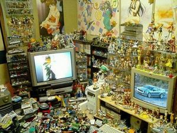
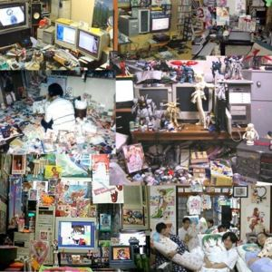

Otaku
 De: La Frikipedia, la enciclopedia extremadamente seria.
De: La Frikipedia, la enciclopedia extremadamente seria.
| De la serie tribus urbanas del mundo:
|
| Otaku
|
Ejemplo de la tribu
|
| Otakus entrando en acción >=3
|
|
| Hábitat
|
Principalmente en ConAnimes y foros
|
| Inteligencia
|
Alta y no sólo en manga y anime
|
| Frase favorita
|
No es un comic, ¡es un manga!, no son comiquitas, son animes
|
| ¿Peligroso?
|
Que va...solo si insultas a algun anime o manga de la élite
|
| Obsesión
|
Leer y ver producciones japonesas
|
| Notas
|
Todos quieren aprender japonés e ir a Japón (si no lo han hecho todavía)
|
«Si yo fuera otaku, sabría que el rasengan fue creado por el 4to Hokage, llamado Minato Namikaze, de la aldea de la Hoja (Kon Hoja) y que Bleach fue creado por Tite Kubo a sus 24 años, apoyado por Akira Toriyama, el creador de Dragon Ball; pero no sé nada de eso»
~ Otaku negando inútilmente su existencia
«¡¡Te juro por Kira y San Gokú que no soy nada de eso!!»
~ Otaku siendo llamado Otaku
«Creo que desde la Cuarta Espada hasta la primera son todos VastoLorde, al igual que Wonderwice»
~ Otaku discutiendo acerca de los Espada en un foro
«Pues yo creo que las Espada son todas Adjuchas, sino Aizen estaría en problemas»
~ Otaku contradiciendo a su congénere
«Anime? estais fumado?»
~ Cani hablando sobre la radiactividad de los Kamejameja que lanzan los wombats
Los Otakus o mas conocidos como Weeaboos son una poderosa variedad de frikis los cuales tienen una gran inclinación por el manga y el anime, como todo friki, se relacionan mejor con sus personajes favoritos amigos de su especie que con otras personas que no lo son.
Descripcion
Los otakus normalmente varían de 13 o 14 años a 18 años(aunque normalmente durante el periodo de 13 y 14 años sueñan con tener sexo con sus personajes anime o manga favorito), aunque en algunos casos el límite se puede extender hasta fines insospechados, como 25, 30 y hasta tal vez 40 años, pero no más de ahí no se han registrado aun ya que o bien dejan de serlo,o se fueron a vivir a japón.
No sobrepasan el 1' 75'' (hay muchos que si) de altura y las 3 pulgadas de largo del pene órgano sexual (por desuso... o por mucho acompañado de hentai(tienen novias/os, ven hentai juntos)).
Muchos de ellos tienen gafas, debido a que pasan demasiado tiempo en el computador, viendo hentai anime o leyendo manga, se visten como sus ídolos (muy ridículos, generalmente). Por suerte, no hay mucha gente que vaya por ahí con esas vestimentas, que sino imagínate salir a la calle y ver a son goku y dos manzanas mas abajo ver a un tio disfrazado de naruto.
En su entorno social se la llevan muy bien con personas de sus mismos gusto y con lsa que hablan de anime y manga, pero también hablan con personas comunes.
Se reúnen en cosas llamadas ConAnime donde se encuentran más individuos (machos y hembras) de su tipo, cosas de las que les gustan, sus semi-dioses: los mangakas (creadores de manga) y sus héroes, también llamados cosplayers, los cuales son seres de su misma clase, pero de un nivel superior que se disfrazan como sus personajes favoritos.
Esta especie no son solo los que viven para el Ánime y el Manga, si no que tambien aquellos que se la creen de japoneses, escuchando J-Music, como si entendieran lo que dice, tienen el iPod configurado en japonés, bajan como cincuenta cursos de 39,95$ "gratis" de japonés en el Ares, pero al fin y al cabo terminan aprendiendo viendo Ánime, saben quienes son Hirohito, Akihito y Naruhito (Realeza Japonesa), pero ignoran quien sea el presidente o la primera dama de su país, se emocionan cuando hablan de Japón en el colegio, y cuando los no Otakus usan palabras como "sushi", "karate" o "kimono"; repiten como 100 veces la escena de "Scary Movie 4", en donde la chava esa habla con palabras de cosas japonesas.
Es la más buena de todas las tribus, porque hay chicas lindas (no todas) y sobre todo vestidas de algo y te da ganas de llevarla a la cama pero en las conveciones no ahi camas para follar o dormir (que les sucede).
Historia
A diferencia de la gente "normal", los "Otakus" no son los hijos de Adan y Eva, sino de un angel llamado Lilith. Luego de ser expulsados de la tierra prometida por los abusadores de la escuela, Lilith conocio a Satan, con quien tuvo su descendencia: los otakus fueron aceptados dentro del reino friki pero como estos estaban absorbiendo su cultura, combinando Juegos de Rol con Naruto y Star Wars con Dragon Ball, decidieron retomar su camino propio, y ahora son nómadas que van de ConAnime a ConAnime.
Trascendencia
Gracias a los otakus, sus semi-dioses, los mangakas, adquieren más dinero, pero no así más fama, debido a que solo los otakus les siguen, negocio lucrativo pero no digno. Los otakus "dicen" haber marcado un hito dentro de la cultura popular y se hacen llamar Los Reyes J-Pop de Japón (a pesar de que no son japoneses), país que se hace más rico cada día gracias a estos. De echo, se dice que Japón superó su última crisis económica gracias a lo recaudado en el Salón del Manga de Barcelona.
Cómo distinguir a un otaku

Horrible Cosplayer de Sailor Moon (idéntico a la real :3)
Horrible Cosplayer de Sakura (Sakura la cazadora de cartas) como se parece eh...
Horrible Cosplayer de Sakura Haruno (la de Naruto). esta si es identica a la real
Horrible no amigos, estos no son colplayers, así quedaa para el final de la serie
Horrible Tipico Narutard el mas facil de reconocer
- Si estas en el receso del cole, ve a una esquina donde no veas muchas personas o donde solo vea un círculo de personas con las cabezas mirando hacia abajo, como si estuviesen viendo o discutiendo algo, si te acercas y te miran extraño porque no has saludado con un "konichiwa", "ohaio" (como sea que este el momento del dia) o no preguntas que rol estan jugando, puedes estar 85% seguro de que eran otakus, el 15% restante es por si estaban falopenado algo.
- Si estas en el youtubi y te topas con un video con musica algo emo, efectos que te provocan comvulciones y escenas o en su defecto imagenes de personajes de animes puedes estar seguro de que el que iso ese video era un otaku. (estos videos se hacen llamar amv y el grado de subnormalidad del que hizo el video se puede medir por la cantida de efectos que le pone, mientras mas efectos
de puta madre u orgasmicos chingones mas subnormal es el que edito el video, también la mayoría que usa el programa loquendo son el 95% gays otakus. se puede medir tambien si grado de frikismo de la misma manera) NOTA: el que escribio este pedaso es un otaku creador de amvs xD
- Si estas en el mésenller y tienes un contacto que no sabes como llegó a parar ahí y este tiene un nick con letras en japonés o un display de algo relacionado al manga y anime, puedes estar 90% seguro de que es otaku.
- Si por accidente entras a un foro de anime pensando que era de hentai y ves personas con nick e imágenes parecidas a lo anterior, y estos discuten acerca de quién es más poderoso, si Goku o Superman, si Ichigo o Alucard, puedes estar 95% seguro de que son otakus.
- Si estas en la calle, y ves tres o mas personas, hablándose uno al otro de anime, casi llegando a
arañarse pelearse por algo y notas que se dirigían a un ConAnime por su ropa, puedes estar 99% seguro de que son otakus.
- Si vas a un ConAnime, puedes estar 100% seguro de que tú eres un otaku.
- Si solo conoces a Dragon Ball Z, no eres un otaku,no eres un friki, eres una persona mas de éste mundo, nada más.
- Si vez en la calle personas con botonoes de muñequitos japoneses (anime) puedes estar un 85% que es un otkau.
Religión
Vale la pena ser otaku (^ω^)
Muchos antropólogos han discutido acerca de cual es la verdadera religión de esta especie, muchos están de acuerdo que, aunque su religión no tiene nombre oficial, algunos se refieren a esta como Otakismo.
Otakismo
Aunque sus inicios son tan inciertos como sus seguidores, se saben que estos tienen como cielo a Japón (la tierra prometida), el cual ellos creen que está lleno de personas disparando rayos y cortándose con espadas (aunque esto no está muy lejos de la realidad), además de mujeres con cabello rosa, poco cerebro y dos buenas razones para ser así, como conjunto de dioses principales tienen a los "Mangakas"; hay un numero incierto de infiernos, además de China, pero tienen experiencias cercanas con anime de mala calidad y de mal gusto.
Todos conocen la gran historia de San Mesias.
En el frikismo se sabe qe el mesias fue Luke Skywalker sinembargo no es recibido asi en el Otakismo, pese a qe es una rama del frikismo y qe ambos buscan un objetibo en común. Los otakus son fieles a los aspectos en sus pajas creencias.
Si se analiza la vida de San Goku, se debe notar qe realizó un sinnumero de milagros milagrosos, caminar sobre una nube, elevarse en el aire, corrio la maraton que se yevó acabo en el Camino de la serpiente en el otro mundo, tocar la cabeza de crilin y ver todos sus recuerdos del temible frizer, no solo escuchar la voz de Dios Kayosama sino también verlo y hablarle, incluso arruino su auto, pudo volver de la muerte, ect... si bien no abrio el mar si no las piernas de Milk y de Bulma el otakismo lo recordara como el mesias que fue y no como el Moisés que no fue.
La segunda venida del mesias, muchos antropólogos frikis debaten sobre el asunto del mesias, aquel que crearía un nuevo mundo, el llamado Kira reyfeo de los Frikis, Dios del nuevo mundo. Su filosofia era simple, o eres bueno o la palmas, Kira tubo sus 13 ideales conocidos como Los 13 ideales de Kira, un cuadernazo con mas reglas que la Biblia. Envio a todo Japon el planeta una epidemia de infartos y atropeyamientos de camiones a motosicletas.
Supero al qe los frikis de todas partes del mundo llaman, Dios, L Loquendero Lawliet porsupuesto todos conocieron esa parte de la historia Friki, y para no cagarme escribiendo todo eso alargar saltemonos a N de Near y M de Mello los que lograrian hacer que crucificaran a Kira, porsupuesto, planeaban crucificar a Kira en público, con un cartel que decia: Reyfeo de los Frikis, con una corona de espinas y en bolas, como ejemplo para que ningun friki del mundo abuse de sus virtudes "Con un GRAN poder viene una GRAN responsabilidad" -Tio de Spermaman.
Cual Coño era el tema...? a ya me acorde, el Otakismo, segun el Otakismo Kira era el mesias, ya qe por lógica si hubiera seguido Kira haciendo lo que mejor sabe hacer, este seria un mundo próspero, sin violencia, y quien no quiere un mundo asi, sin rellenos de narutos, sin Hanas Montanas, y abundantes cadáveres, aunque controvercias en el Frikismo por lo de que Lawliet era un Dios friki y loquendero, podria ser L, el Mesias? todo esto es muy importante para el Otakismo. Cabe resaltar que Matsuda cago a tiros a Kira, poniendo fin a su reinado de paz asi que ya no hubo crucificción con bolas al aire, y porsupuesto crecio el crimen en un 100,000,004% desde la muerte del Reyfeo.
El Otakismo, su Antiguo Testamento son Dragon Ball Z y Caballeros del Zodiaco (Saint Seiya) y su nuevo testamento son One Piece Bleach y Naruto (aunque hay una gran rivalidad entre estos).
Aunque se tiene conocimiento de que una secta radical variada de los otakus se basa en un Libro Religioso más antiguo basado en Evangelion. Esta dividido en cuatro testamentos:Evangelion segun Hideaki Culo, Evangelion segun Yushinosecuanto Sadamoto, Evangelion segun mierda proviniente de Internet yEvangelion segun mierda soho que GAYNAX se atrevió a producir. También están los salmos, que vienen a ser la recopilación de las frases más pastelosas de Full Moon, Fruits Basket Y Chobits juntas.
NOTA: El cuarto testamento es el variante satánico de los tres anteriores.
En imitación de la Santa Trinidad de McGiver, Doctor House y Jack Bauer, tienen como Santa Trinidad a Cobra, Doraemon y Astro Boy.
Actualmente uno de los Dioses más reconocidos es Suzumiya Haruhi que esta creando fieles (autoproclamados haruhiistas) con el Hare Hare Yukai
Para sus rituales de adoración ánime, se ponen cinta adhesiva en los ojos para asemejarse más a los dioses (kami), que habitan en la tierra prometida.
Cosplay
La palabra cosplay es una abreviatura de Costume Player, que consiste en recrear a un personaje de anime, manga o videojuego famoso haciendo un cosplay de él y conservando hasta el más mínimo detalle. Por lo general los otakus de nivel bajo se asombran de que otakus de más nivel hagan cosplay, pero estos otakus de nivel superior está orgullosos de su condición ante la calaña de los de menor nivel.
Hay varios cosplays que son de mu buena calidad, pueden llegar a ser realmente buenos y dejar a la mayoría de los otakus de nivel bajo como unos pasmarotes o incluso se te acercarán para pedirte un autógrafo.Debido a la ignoracia de otros y a la falta de inteligencia y aspecto, hacen cosplays desastrozos que suelen dejar a la gente asombrada porque son una cagada y no son veraces (Ej: Un L gordo y las fotos que hay a los lados)
Los cosplay más abundantes son los de personajes de manga o anime, pero en japón también se calzan un harapiento traje de karateka para ir de Ryu a ver si se trajinan a una Chun-Li o si se ahostian con un Byson por el camino. Y no solo de Street Fighter, también de KOF, Tekken o incluso del villano de videojuegos más malvado y rastrero que ha existido: Mario.
Niveles
- Friki: (¡sí! tenia que ser!!!!, ¡los consideramos como un bajo nivel de otaku!): Solo conoce uno que otro anime de renombre (ya que lo ve en televisión o sea Cartoon Network y no conoce Animax ya que piensa que es ateo y que solo hablan de satan)
- Otaku nivel bajo: Ha visto algunos animes, sabe un poco de todo (pero no del lemon ni del yuri, ni del yaoi, ni del shonen-ai).
- Otaku nivel medio: Ha visto y bajado varios animes y algunos manga en general, ha hecho uno o varios AMV y ha ido a uno que otro ConAnime ( no es obligatorio, solo con haber visto mas de 30 series estas aprobado)
- Otaku nivel alto: Ha visto, bajado y quemado en CD y DVD en grandes cantidades de anime (obvio todo pirata sino seria un bill gates version mega otaku), conoce varios títulos de mangas, habla en varios foros de anime y se sabe de memoria nombres de mangas, además de haber asistido a una o dos convenciones (si no hay en tu pais mala suerte)
- Akiba kei: Además de haber hecho mucho más de lo antes mencionado, tiene todos los animes que conoce en mangas, en anime y en.. lo demas que sea, dirige un foro, un fansub, una página web (Editar el articulo del anime en Frikipedia tambien cuenta), ha hecho un doujin (manga creado por uno/unos de ellos) y hasta ha ido a todas las convenciones que esten a su paso.
Este ultimo especimen (Akiba kei) es muy raro (en el sentido de que nunca se encuentra), ya que la mayoria de los otakus tienen bajos recursos (les falta lana) y pues sus padres no les dan permisos de avergonzarse tantas veces en una sola vida (y la mayoria tiene entre 25 y 40 años). Debido a esto se han presentado casos de que estos especimenes han secuestrado a sus padres y los han vendido en E-bay, así que cuidadin.
- Otaku Extremo: (especie en peligro de extinción) Es una especie de maniatico que no hace mas que estar las 27hrs del dia los 10 días de la semana en la PC. No come, no tiene novia, no va al baño (se caga encima), no se pajea con porno de verdad (solo con hentai), todo debido a que no vive en Japón y mata por llegar, y si no mata, se suicida (han existido casos raros, pero se matan con una Death Note, por lo que solo ellos creen que les funciona, asi que se mueren por estupidez)
- Otaking: El rey de los Otakus y mas peligroso que los otakus extremos, que tiene subditos que todos los niveles anteriores dispuestos a "pelear" por el (por lo general en otaking es el diector de algún grupo de cosplay, y los amenaza con no llevarlos si no lo defienden de su enemigos: jebis, pijos, nada, etc, en realidad todos son sus enemigos)
Principios
- No veras caricaturas a menos que sean animes
- No bajarás anime de baja calidad
- Honraras al anime que te hizo otaku o friki
- Probaras el ramen y el dango u onigiri (bolas de arroz)
- No te arrepentiras de ser un otaku
- No veras PrOn, verás hentai
- Si eres mujer tu cosplay debe ser sexy y si eres hombre tendra que ser de un personaje principal no secundario
- No escharas musica si no es japonesa u opening o ending
- No insultaras a Japon o una de sus ciudades
- No hablarás con otra persona fuera de tu clan, exepto si te le estas enrolando
- No trabajarás menos de 2 semanas en un disfraz para cosplay
- No dirás el nombre de Mahou Sensei Neimga, Neon Genesis Evangelion,Sargento Keroro, dragon ball, Saint Seiya, u otro gran anime en vano
- No verás el relleno de Naruto.
- No
llorarás te enojarás por leer este artículo.
- No dirás algo en buen plan en internet sin añadir después ^^ / ^_^o cualquier otro derivado (XD, o.o, -.-, ^^, x3, u_u, n.n, etc)
- No veras hentai si tus padres no te lo han prohibido.
- No dejarás vivir a aquella persona que instulte tu anime o manga favorito.(esta ley me va a matar si sigo burlandome de los otakus)
Requisitos para ser Otaku
Para ser otaku tienes que:
- saber que es el anime
- Tener novio/a que le guste el anime y si no, segir a Konata, con lo de los chicos con las chicas 3D y las chicas con los del 2d
- ser shinigami
- haber visitado un Restaurante cosplay
- tener todo tu cuarto con posters de anime
- tener al menos 10 revistas hentai debajo de tu cama o donde se te de la pinche gana
- tener un hermano mayor que te discrimine por ser otaku
- tener 100 DVD
originales con series de anime
- tener 6 pokemon
- tener almenos $3,845 DOLARES en puras cosas de anime en tu cuarto
- Tener mas de 30GB en cosas anime en tu ordenador
- Tener un death note
Entrenamiento reglamentario del Otaku
Ser Otaku es algo muy sacrificado ya que debes seguir un duro entrenamiento:
- Intentarás transformarte en Super Sayajin al menos tres veces durante tu adolescencia.
- Intentarás distinguir a las personas que viajan en un tren a gran velocidad para entrenar tu vista. De ese modo, podrás esquivar los ataques con mayor facilidad.
- Patearás un árbol e intentarás coger 10 hojas golpeando al aire. De ese modo tus golpes serán más rápidos.
- Golpearás gotas de agua cuando llueva.
- Chutarás balones contra las olas del mar un día de tormenta. De ese modo, tu chut podrá romper las redes de las porterías y el balón quedará estampado contra la pared.
- Te concentrarás dos horas al día con el objetivo de hacer visible tu aura de combate.
- Golpearás rápidamente a los cojines del comedor (cuando estés solo en casa) para intentar emular a la velocidad de Kenshiro.
- tendrás una Death Note y anotaras a los no otakus que se burlan de ti
- Intentaras al menos una vez en tu vida acumular chakra en tus pies y subir corriendo un arbol (Recomendacion: usen casco, el aterrizaje duele mucho) ToT.
- Buscarás un shinigami o una bruja que te de un poder para cambiar el mundo que según tú está podrido, para ser el dios del nuevo mundo / crear un mundo seguro para tu hermana.
- Haras tantas lagartijas como puedas para tener fortalecer tus brazos y pelear.
- entrenaras bajo una catarata de mas de 1000 l/s para poder meditar y consentrar tu "chi".
- Intentarás caminar sobre el agua.
- Debes de conseguir poseer una energía interior cualquiera, ya sea Ki, Haki, Chakra, Nen, Reiatsu, Cosmos, etc
- le patearas los cojones a cualquier ignorante que diga "tus caricaturas chinas..." gritando "que son japonesas gilipollas!"
- intentaras hacer los jutsus de naruto pero solo lograras que crean que tienes problemas
- usaras 12 cosplays diferentes... al mes
- deberas ver hentai(si eres mujer yaoi)almenos 5 veces a la semana para asi apreciar a esas mujeres que nunca tendras en la cama(si eres mujer entonses busca a un japones que te viole,es lo mas cercano que estaras de cargarte a un personaje de anime o manga
- tendras una death note y escribiras a los que no sean otakus y frikis (almenos que se estan volviendo uno de ellos)
- veras mas de tres series gore
- Pajearte con hentai
- Intentar conseguir por todos los medios usar el Bankai, aunque sea con un carton del papel del vater
- Dejar que te entre humo en el ojo para perfeccionarlo y obtener el Sharingan (aunque sufras una conjuntivitis de campeonato)
- Por ningún motivo correrás. Si necesitaras desplazarte a gran velocidad usarás shunpo, hirenkyaku, sonido o técnica similar.
- Buscarás, al menos dos veces al día, la sala del tiempo para poder pasarte diversos años entrenando y poder llegar a ganar una competición contra un clon defectuoso de Goku (contra el real no podrías)
- Intentarás por todos los medios alargar tus brazos para hacer un gomu gomu no
- Te pondrás pesos en los pies seguro de que cuando te los quites, serás superrapido
- Llevarás arena a todos lados para que te proteja si te pegan.
- Beberas Sake para pelear mejor
- Llorarás cuando se muera tu personaje favorito del anime/manga que estés siguiendo
- Desearás con todas tus fuerzas ir al mundo donde viven los personajes de cualquier anime/manga
Verdades y mentiras acerca de los otakus
A continuación, un corto pero breve listado acerca de mitos de los otakus:
- Los otakus pueden tener novia: "verdadero" pero la mayoria de veces sus novios(as)tambien son otakus
- Los otakus no son frikis, sino una especie subalterna: Más falso que un billete de 3 dólares, su frikismo abarca un nivel tan abismal que es comparable con Dead y Euronymous de Maijen.
- Los otakus pueden hablar con personas que no sepan de anime: Falso,
No conocen el mundo real porque viven atrapados en un anime No gastarán saliva y energías en hablar con un pobre infeliz que no reconozca y sepa de la grandeza del anime y manga. Es decir, con seres humanos engendros ignorantes e inferiores a ellos
- Luego de ver la película "300" (mal influenciados por
el lado oscuro frikis), algunos otakus adoptaron la frase "¡¡¡THIS IS OSAKAAAAAAAA!!!" (ciudad de japón): Verdadero, y este hecho llena de vergüenza a gran parte de la raza.
- Los mejores anime/manga se han creado para otakus femeninas: Falso, aunque la Confederación Otaku J-Pop Anti-machismo (CONOJA) diga lo contrario, ni Sailor Moon ni otros anime famosos fueron creados para mujeres, sino para el deleite de los otakus masculinos.
- La mayoria de las otaku femeninas aman el yaoi: Verdadero, estas mujeres tratan de obligar a sus amigos a verlo solo por que dicen que el yaoi es kawaii(algunas otakus se cargan a sus amigos masculinos mientras ven yaoi asi lo obligan a el a ver eso aunque preferiria el hentai)
- Los otakus no mueren nunca porque siempre hay otro otaku que los revive con Colas Fénix: falso, eso sólo ocurre con los frikis de los Final Fantasy. Los otakus son revividos por shenlong o mediante un jutsus prohibidos.
- Los otakus pueden ser gente normal: VERDADERO
(Falso si no estarias quebrantando tu cultura) los otakus pueden llegar a ser mas normales, que los que lo dicen ser
Lenguaje
Para comunicarse entre ellos, los otakus usan una mezcla de 60% su idioma natal y un 40% de japonés. Lo malo es que ese %40 de japonés lo aprenden de series de anime por lo cual lo que
 Típica habitación de un otaku x3 (notese el mustang en la computadora, la unica cosa no otaku o_O)
 Otras típicas habitaciones de unos otakus o_O
- 'Pero para aclarar a los que no saben de nada usan:
- No se dice comic, se dice "manga"
- No se dice caricatura, se dice "Anime"
- No es para niños, es shonen
- No es homosexualidad, es yaoi
- No es lesbianismo, es yuri
- No es porno, es hentai
- No es pedofilia, es lolicon
- "No es Zura es Katsura"
- No es gay, es shonen ai o yaoi
- No es aberración sexual, es ero-guro
- No es chino, es japonés
- Son animaciones japonesas, no chinas
- No es Anturo es Naruto
- No es pérdida de tiempo, es investigación en base a la serie
- no es sasuke y naruto se odian, es sasuke y naruto se aman a la decima potencia!!
- Y la más importante: No soy friki, soy otaku!
- Japón no está en China, Baka!!
- No es amigo es tomodachi
- No es hermano y hermana! es oni-chan y nee-chan!
- Para insultar dicen "Ajo" o "Baka"
- No es cool, es "Kakoii"
- No es lindo o bonito, es "kawaii"
- Al gritar cuando una cosa te parece mona dirás " nyaaaaaaaaa"
- Tambien se acepta el "kyaaaaaaaaaa"
Y por internet se expresan con símbolos altamente codificados que sólo ellos entienden emoticonos siendo el mas importante el XD.
Eres otaku si...
- ...fuistes al funeral (Cibernetico) de MegaUpload
- ...Odias las leyes SOPA/PIPA/OPEN/ACTA porque ter va a quitar toda posibilidad de ver Anime y Manga por internet y junto a lo anterior juras venganza contra EE.UU y el FBI
- ...te molestas la semana que no hay manga/anime
- ...pero la semana que sigue enloqueces por que hay dos capitulos
- ...tomas clases de japonés
- ...Esperas ir algún dia a Japón y casarte con el primer japones que veas para tener hijos que salgan con algún tipo de superpoder
- ...si te preocupastes por el estado de salud de tu autor de Anime o Manga favorito cuando hubo el Terremoto de Japon
- ...si viste Bakuman, y quieres ser mangaka.
- ...si terminas todos los nombres diciendo -kun -chan o -san (ej: Fulanito-kun, Pepa-Chan, Pancracio-san). En casos peligrosos, pueden referirse a un personaje ficticio como -sama o peor aún terminas diciendole a tus profesores -sensei(sama=deidad, dios, individuo importante...sensei=maestro)
- ...saludas a los demás con expresiones que sólo tú entiendes
- ...tu fuiste el que escribió este artículo
- ...matas al primero que insulte un anime o manga
- ...si sabes que sin un Terremoto destruye Tokio, se acabara el Anime y Manga
- ...prefieres ver sexo de personajes de manga que de personas reales
- ...si te encierras en tu cuarto a revisar tu nuevo manga y pones un letrero en la puerta con amenazas e insultos (ejemplo: si me molestas te lanzare mi BAN-KAI!!mortallanzakunaisdelamuertecombinadoconmirasengandeclonesdesombrasasesinasyteanotareenmideathnote, BAKA!!
- ...si sufres por la espera mientras descargas un capítulo
- ...bajas manga/anime en otro idioma que no entiendas sólo por verlo más rápido
- ...consideras tus personajes favoritos como seres reales y con sentimientos
- ...te sabes de memoria más de 50 títulos y sus autores (y no recuerdas tu cumpleaños)
- ...haces botellón con una botella de sake
- ...si traes tu bandita de naruto colgada del cuello para que todos la noten
- ...compras carteles de animes
- ...has dicho (por lo menos) 15 veces durante el transcurso de un año la frase "te anotaré en mi Death Note(los más otaku dicen desu-notto, cuidado con estos que son los mas peligrosos)"
- ...sabes cómo obtuvo Krillin sus puntos en la frente
- ...el verdadero arte te parece "una explosión" o "perfectamente simetrico"
- ...tienes el comportamiento descrito en este artículo
- ...Eres odiado por elanticristo2007
- ...o en otros casos depende en el año en que andes pude ser: elanticristo2008, elanticristo2010, elanticristo2400, etc.
- ...te gustan todas los personajes de anime que ves (y deaseas casarte con alguna de ell@s)
- ...ves anime (si no cumples esta no puedes hacer la anterior)
- ...amas hacer articulos de anime como excel saga (ah? no se entinde)
- ...le pegaste a tu hermanito con un cero (en realidad era un examen pero sacaste cero)
- ...buscas toda tu vida una mujer de grandes proporciones para casarte con ella; o en su defecto buscas una de pequeñas proporciones por que es mas loli o kawaii(como prefieras...)
- ...si lanzas objetos (lápices, tazos, palillos, zapatos u otros objetos peligrosos, etc) a cualquier cosa simulando que es un kunai o shuriken
- ...si le das pena a la gente normal o menos friki
- ...si puedes sentir el ki de los demas
- ...o en otros casos su reiatsu o chakra
- ...si alzas una escoba y gritas ¡¡BAN-KAI!!
- ...si te tomas fotos haciendo el gesto de "amor y paz" (y si tratas de abrir tus ojos hasta más no poder, simulando tener ojos ridículamente enormes como los personajes de anime, es peor)
- ...si en tu nick o mensaje personal de msn tienes tu nombre (o algo más) escrito en japonés.
- ...si has hecho de todo para conseguir un maldito disfraz de un personaje "x" de un anime "x"
- ...si cantas canciones en japonés
- ...si tratas de imitar los gestos exagerados de un personaje de anime.
- ...si has pensado ponerte lentes de contacto o pintarte el pelo para parecerte más a un anime.
- ...si te maquillas en exceso con delineador negro y sombras negras
- ...si usas los siguientes emoticonos: ^O^, x3, ~.~ , *O*, >,,,< , >.< , entre otros.
- ...si estás obsesionado con los gatos.
- ...si te gusta lacearte el pelo (nota: la mayoría de los personajes femeninos de anime poseen el cabello lacio)
- ...si te gusta dibujar anime.
- ...si te gusta hacer "fanfics"
- ...si pones como pretexto a la inseguridad en las calles (Especialmente funciona siempre en Venezuela) para no salir de tu cuarto y ver anime toda la noche
- ...te sabes todos los openings y endings de las series que haz visto en todas sus versiones
- ...los ensayas frente al espejo
- ...Te la pasas corriendo como tonto simulando hacer el sonido, paso flash o el movimiento ese que hacen los drag-quincy
- ...Le arrojaste una piedra a tu perro en una simulación de lo que seria atrapar un pokemon
- ...alguna vez alucinaste en que estabas en un anime (eso cubre todo lo de arriba)
- ...buscaste hasta el cansancio al shinigami durante 6 dias despues de haberte comprado el death note en la comiqueria
- ...Te subes a los arboles a canalizar tu chakra y hacer sellos pretendiendo ser Naruto
- ...Si entras a YouTube para ver episodios de Naruto y seas victima del RickRoll'd
- ...si vez hentai por lo menos 5 veces a la semana
- ...si alguna empresa de japon (Como TV Tokyo) te ha quitado algun video de anime o manga de You Tube
- ...de lo antarior usaras otra empresas de video (Como Tu.tv) para ver o publicar videos sobre anime
- ...si te gusta un personaje de anime al echarse novi@ te pondrás celos@(procederás a pegar tu foto encima de la cara de este )
- ...si al finalizar cada frase dices: datte-bayyo!(o como se diga)o cualquiera de sus derivados
- ...si leiste todos los items anteriores
Si eres Otaku debes saber que...
- Esta prohibido llevar katanas en la calle.
- Pokemon tiene 161,458,456 temporadas y casi la misma cantidad en especies pokemon.
- Las chicas otakus aman al yaoi, es una ley universal.
- Sasuke es emo.
- Keitaro es gay.
- Nobita lo es aun mas
- El verdadero protagonista de Pokemon es Pikachu y no Ash
- En los Espada solo hay un Gillian, 5 Adjuchas y del 4 para arriba son Vasto Lordes.
- Yugi no usa tinte para pelo, ese es el color natural de todo japones.
- Naruto es una ciudad de Japon de la prefectura de Tokushima (Lo que significa que Kishimoto es un vil copiador)
- Edward Elric no es pequeño, simplemente se toma muy enserio lo de "Jamás creceré".
- En la vida real, ninguna niña de 16 años tiene un busto enorme.
- Lo anterior se puede arreglar con una cirugia.
- Danzou (de Naruto) quiso hacer de su barbilla, una alcancia...
- Le falló, por eso usa su trasero.
- En Naruto el relleno no cuenta.
- Pokemón es un anime.
- Y Hamtaro tambien
- 4kids es una institución gringa que censura anime.
- 4Kids quebró por la razón anterior.
- El yaoi es un intento de las
ancianas ninfómanas mangakas para dominar al mundo.
- Si escribiste o participaste en este articulo, eres Otaku.
- Cuando veas anime (si eres una chica) te atraerá mas el tipo raro o el que mas tenga cara de mujer (mientras mas tenga estas características, mas te jodes)
- Tu siempre ganas.... Doraemon
- Que "Avatar, el ultimo maestro del aire", es un mal intento de anime.
- Si Naruto obtiene menos exito que Dragon Ball al menos no haran una
mala pelicula y que como minimo se mantendra su esencia japonesa anime/manga buena reputacion.
Enlaces Externos
| Tribus Urbanas
|
 Universales Universales
 Españolas Españolas
 Argentinas Argentinas
 Chilenas Chilenas
 Colombianas Colombianas
 Mexicanas Mexicanas
 Peruanas Peruanas
 Venezolanas Venezolanas
|
Autor(es):
- Krusher
- Nexo
- EmuAGR
- Doctor grijander
- Unsocialsix
- Cañonero
- Frikiman
- Aque
- Ratalaika
- Jowy
Frikipedia 2005-2016, Licencia
GFDL 1.2 - Extraído por FrikiLeaks